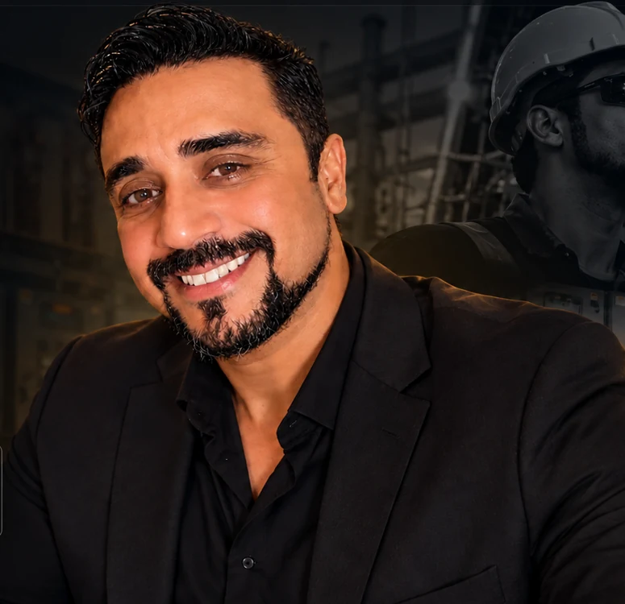

01 /
Manutenção
elétrica industrial
Diagnóstico de falhas, manutenção preventiva e corretiva, comandos elétricos, painéis de potência e acionamentos de motores.
TÉCNICO EM ELETROMECÂNICA
MANUTENÇÃO ELÉTRICA INDUSTRIAL
Atuação em manutenção elétrica e eletromecânica em ambientes industriais, saneamento e energia eólica, com foco em segurança, diagnóstico de falhas e confiabilidade operacional.

01 / QUEM SOU
Sou profissional da área de manutenção elétrica industrial e eletromecânica, com experiência em operações que exigem segurança, resposta técnica e continuidade dos sistemas.
Minha trajetória passa por unidades de saneamento, parques eólicos e indústria, reunindo atividades de inspeção, manutenção preventiva e corretiva, identificação de falhas e leitura de diagramas elétricos.
Atuo com motores elétricos, conjuntos motobomba, painéis de comando e potência, inversores de frequência, soft-starters e sistemas de automação industrial.
02 / ESPECIALIDADES
Experiência técnica em diferentes operações e sistemas industriais.
Diagnóstico de falhas, manutenção preventiva e corretiva, comandos elétricos, painéis de potência e acionamentos de motores.
Manutenção elétrica e eletromecânica em unidades operacionais de saneamento, estações elevatórias e conjuntos motobomba.
Manutenção de aerogeradores, sistemas hidráulicos e elétricos, inspeções técnicas e atividades com CLPs Siemens.
CONHECIMENTOS TÉCNICOS
03 / TRAJETÓRIA
AMBIENTAL CEARÁ · GRUPO AEGEA
Manutenção elétrica e eletromecânica em sistemas de saneamento, incluindo estações elevatórias, conjuntos motobomba, motores, painéis de comando, inversores de frequência e soft-starters.
SRA · SAFETY ROPE ACCESS
Manutenção preventiva e corretiva em turbinas eólicas, automação industrial, sistemas elétricos e hidráulicos. Atuação com CLPs Siemens, redes ControlNet e rotinas de inspeção no Parque Eólico de Tucano (BA).
BELA VISTA GROUP CONTRATO INTERMITENTE
Manutenção preventiva e corretiva em aerogeradores de diferentes fabricantes. Inspeções e reparos em gearboxes, grupos hidráulicos, guinchos, sistemas de segurança e comandos elétricos no Parque Eólico de Trairi.
CORDEIRO REMOÇÃO
Apoio em testes, desmontagem e montagem de componentes, identificação de falhas elétricas e mecânicas em motores automotivos.
ESMALTEC ELETRODOMÉSTICOS
Programação e controle da produção, análise de dados operacionais, indicadores de desempenho e relatórios gerenciais.
IBGE
Coleta estruturada de dados do Censo Demográfico e comunicação com diferentes públicos.
04 / CAPACITAÇÃO
Base técnica e capacitações para atuar em ambientes industriais.
ENSINO SUPERIOR
ENSINO SUPERIOR
FORMAÇÃO TÉCNICA
QUALIFICAÇÃO E SEGURANÇA
Capacitações em eletricidade, máquinas, espaços confinados, trabalho em altura e operação de sistemas eletromecânicos.
Outros cursos: operação e manutenção de aerogeradores e subestações em parques eólicos, instalação e comissionamento, tecnologias hidráulicas, resgate em altura e direção defensiva.
05 / VAMOS CONVERSAR
Estou aberto a conversar sobre oportunidades em manutenção elétrica industrial e eletromecânica.
CANAIS DIRETOS
E-MAILanderson.mesquita1903@gmail.comWHATSAPPConversar pelo WhatsAppLINKEDINVer perfil profissional